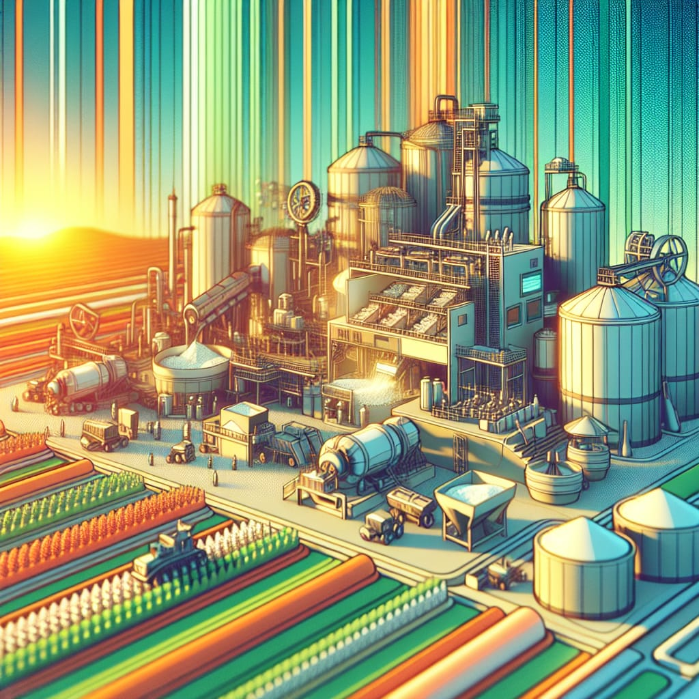
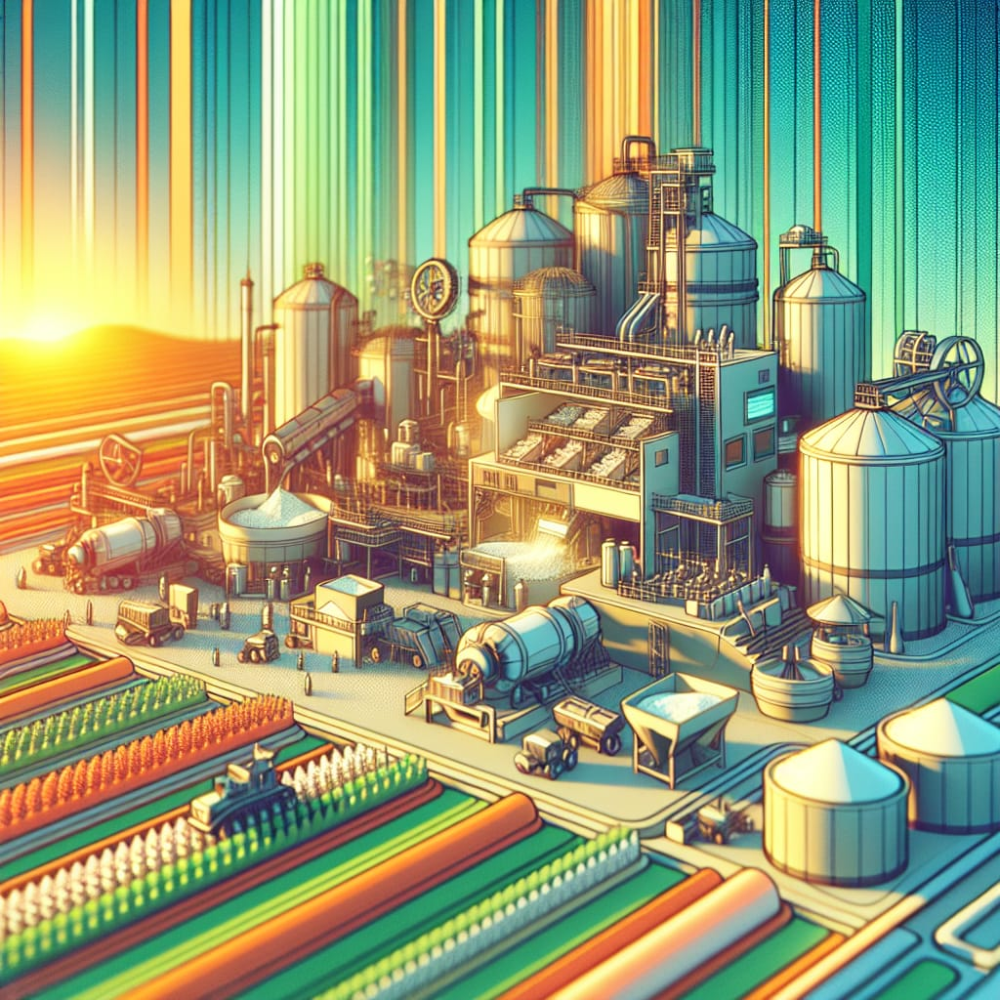

Build Your Online Presence with Nanofertech

Are you an aspiring entrepreneur, advocate, or activist looking to brand yourself online? Nanofertech is here to help you take the next step with our routine workshops designed to empower you in building your online presence.
In this hands-on workshop, you’ll learn:
• How to design a vectorized logo that reflects your brand identity
• Big data visualization on animation
• Creating a professional landing page to capture your audience's attention
• Website development using powerful open-source resources and website builder
• Hosting your website for free on GitHub
• Tracking user traffic with Google Analytics to understand your audience better
Our workshops are designed for small classes and are tailored to your needs, ensuring immediate, practical value. Whether you're just getting started or looking to refine your online presence, this workshop will provide the tools and knowledge you need to thrive. No coding knowledge required.
Call for Submissions: Special Issue on Developments in Fertilizer Technology – Scientific Reports (Nature Publishing)
 

Why submit? Scientific Reports is a renowned, peer-reviewed, open-access journal with a strong impact factor of 3.8 (Journal Citation Reports® Science Edition, Clarivate Analytics, 2024). This special issue aims to showcase the most innovative advancements in fertilizer technologies that drive sustainability, efficiency, and productivity in agriculture. With a global readership, this is your chance to have your work reach an international audience.
How to Submit? Scientific Reports is now accepting abstract submissions to assess the suitability of your research for this special issue. Take advantage of this opportunity to receive valuable feedback before formally submitting your full paper (https://www.nature.com/srep/author-instructions/submission-guidelines).
What We’re Looking For: Cutting-edge research in fertilizer technology, especially focused on controlled-release systems and precision agriculture. Studies that contribute to soil health, crop nutrition, and disease management. Papers that address the challenges and opportunities in modern agriculture, including sustainability, resource efficiency, and climate change.
Why You Should Submit: Your research will reach an international scientific audience, positioning you as a thought leader in fertilizer technology. Moreover, Scientific Reports offer a waiver for publication fees based on written requests, making this a valuable opportunity for all researchers.
This is your chance to contribute to cutting-edge innovations in fertilizer technology and have your work featured in one of the world’s most respected scientific journals. Don’t miss out!